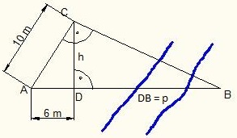

Pythagoras Aufgabe 30 Der Punkt B wurde von A und C aus über einen Fluss hinweg anvisiert. D liegt auf der Strecke AB. Berechnen Sie die Strecke AB in m.

Satz von Pythagoras im Dreieck ADC: AC2 = AD2 + h2 |-AD2 h2 = AC2 - AD2 h2 = 102 cm2 - 62 cm2 = 64 cm2 |√ h = 8 cm Höhensatz im Dreieck ABC: h2 = 6 cm * p 64 cm2 = 6 cm * p |:p p = 10,7 cm AB = 6 cm + 10,7 cm = 16,7 cm